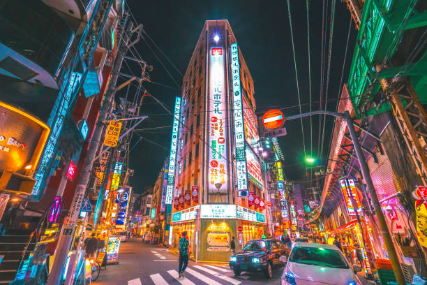
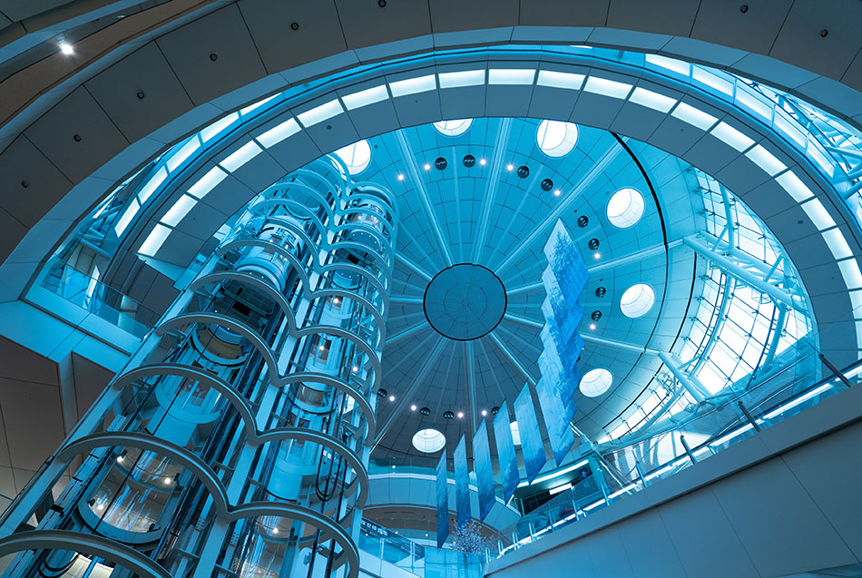

El Corazón de la Tecnología
Tokio es una ciudad donde el pasado y el futuro chocan a cada esquina. Sus calles vibran con luces de neón, mercados electrónicos y rascacielos que iluminan la noche.
Desde Shinjuku hasta Akihabara, cada distrito tiene su propia identidad, fusionando tradición japonesa con avances tecnológicos al límite.
Datos sobre Tokio
- 🏙 Skyline dominado por luces de neón y pantallas digitales.
- 💡 Distrito de Akihabara, el epicentro de la cultura tech y gamer.
- 🚄 Trenes ultra-rápidos como el Shinkansen, transportando el futuro.
- 🛸 Robots e inteligencia artificial en la vida cotidiana.
- 🌐 Conectividad extrema, 5G en cada rincón.
📍 Ubicación y Mapa
Tokio, una de las ciudades más avanzadas del mundo, fusiona tecnología y tradición. Sus distritos más icónicos incluyen:
- ⚡ **Akihabara** - Epicentro de la tecnología y la cultura gamer.
- 🌆 **Shinjuku** - Rascacielos iluminados por pantallas gigantes.
- 💠 **Shibuya** - Calles llenas de anuncios digitales y luces neón.
Mapa interactivo de Tokio
🚀 Tecnología Destacada
Tokio es la cuna de avances que parecen sacados de una película futurista:
- 🤖 Robots en hoteles y restaurantes.
- 🛸 Transporte automatizado con trenes sin conductor.
- 🔮 Pantallas holográficas en tiendas y estaciones.
🎮 Cultura Tech y Gamer
El impacto digital en Tokio es imparable:
- 🎰 Salones de arcade futuristas.
- 🌐 Conectividad 5G de última generación.
- 👾 Influencia del anime y videojuegos en el diseño urbano.
📷 Galería


Calles de Tokyo
Luces neon
Aeropueto de Haneda